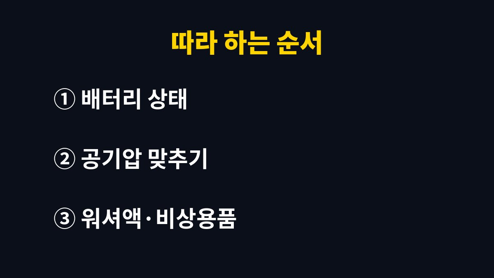

겨울철 자동차 점검 5가지를 직접 해 본 경험을 바탕으로 핵심부터 차례대로 짚어 본다. 기온이 영하로 내려가기 전에 내 차를 미리 챙겨 두고 싶은 운전자에게 필요한 기준과 순서를 담았다.
2026년 11월 기준으로 한국교통안전공단과 정비 업계가 공통으로 꼽는 겨울철 점검 항목을 내가 실제로 확인한 순서대로 정리했다.
쇼핑몰 택배 발송 때문에 이른 아침에 차를 쓰는 날이 많아서, 겨울 시동 문제는 나에게 꽤 현실적인 걱정이었다.
자동차 배터리는 화학 반응으로 전기를 만드는데, 기온이 내려가면 이 반응이 느려진다.
그래서 가을까지 멀쩡하던 차도 첫 한파가 온 날 아침에 시동이 잘 안 걸리는 일이 생긴다.
블랙박스 상시 녹화처럼 시동이 꺼진 뒤에도 전기를 쓰는 장치가 있으면 부담은 더 커진다.
공기는 차가워지면 수축하기 때문에 여름에 맞춰 둔 공기압도 겨울에는 자연스럽게 낮아진다.
공기압이 부족하면 접지력이 떨어지고 제동 거리가 길어지며 타이어가 고르지 않게 닳는다.
배터리가 방전되면 출동 서비스를 기다리는 시간과 일정 차질이 함께 생긴다.
부동액 농도가 낮은 상태로 한파를 맞으면 냉각 계통이 얼어 더 큰 수리로 이어질 수 있다.
그래서 나는 본격적인 추위가 오기 전인 11월을 점검 시기로 정해 두었다.
| 점검 항목 | 확인 방법 | 기준·참고 |
|---|---|---|
| 배터리 | 상단 표시창 색 확인 | 초록 정상, 검정 충전 부족, 투명 교체 |
| 타이어 | 공기압·마모 확인 | 적정 공기압은 운전석 문 옆 표시 |
| 부동액 | 양과 색, 농도 확인 | 물과 1:1 비율, 교환 2년(4만㎞) 경과 시 교체 |
| 워셔액·와이퍼 | 겨울용 워셔액 보충 | 얼지 않는 제품 사용 |
| 등화·브레이크 | 전조등·브레이크등 점검 | 시야 확보와 후방 추돌 예방 |
부동액 기준은 한국교통안전공단이 겨울철 점검 때 안내한 내용을 따랐다.
배터리 표시창은 모든 차에 있는 것이 아니어서, 없는 차는 정비소에서 전압을 측정받는 것이 확실하다.
와이퍼 고무가 굳어 유리에 줄이 남는다면 겨울 전에 바꿔 두는 편이 눈 오는 날 시야 확보에 훨씬 유리하다.
트렁크에는 성에 제거기와 장갑, 손전등처럼 갑자기 멈췄을 때 필요한 물건을 함께 넣어 두었다.
나는 기름을 넣을 때 무료 공기 주입기로 네 바퀴 공기압을 맞추는 것을 겨울 루틴으로 정했다.
운전석 문 옆 스티커에 적힌 숫자를 사진으로 찍어 두니 매번 찾을 필요가 없었다.
눈길에 뿌린 염화칼슘은 차량 하부를 부식시킬 수 있어서, 눈길을 달린 뒤에는 하부 세차를 하고 있다.
경유차라면 연료 계통 수분이 얼어 시동 불량이 생길 수 있으니 연료필터 수분 배출도 함께 챙기는 것이 좋다.
부동액 농도와 배터리 전압은 눈으로만 보기 어렵다.
나는 엔진오일을 갈러 간 김에 두 가지를 함께 봐 달라고 요청했고, 기다리는 시간도 길지 않았다.
부동액 원액을 그대로 많이 넣으면 오히려 엔진 과열의 원인이 될 수 있다는 설명도 그때 들었다.
직접 보충할 때는 물과의 비율을 꼭 맞추는 것이 중요하다.
아래 순서는 내가 실제로 점검한 순서이며, 전부 해도 주유소와 정비소를 한 번씩 들르는 정도면 끝난다.
처음 한 번만 제대로 해 두면 겨울 동안에는 공기압과 워셔액만 가끔 확인하면 된다.

겨울철 자동차 점검은 대부분 몇 분이면 끝나는데, 미루면 추운 출근길에 견인이나 출동 서비스를 부르는 일이 된다.
브레이크 페달이 깊게 밟히거나 이상한 소리가 나면 셀프 점검으로 넘기지 말고 바로 정비소를 찾는 것이 안전하다.
다음 글에서는 겨울철 눈길 운전에서 미끄러짐을 줄이는 습관을 정리할 예정이다.
※ 2026년 기준 공공기관 안내와 개인 운전 경험을 바탕으로 정리한 글이며, 차종에 따라 점검 기준과 교환 주기가 다를 수 있어 차량 설명서를 함께 확인하길 바란다.